黑白相交，棋意绵绵---黑白漫长的较量
#1 黑白相交，棋意绵绵---黑白漫长的较量 作者：蓝天蓝 发表时间：2013-11-23 19:13:28
黑白相交，棋意绵绵---黑白漫长的较量
作者：菁英4台 ricardo
家族赛第五轮菁英4台胜华电4台 棋评
对手是华电的四台，之前看过他的一些对局，感觉从实力上来说自己还是有着不小的优势，所以并未做太多准备，导致这盘最后下得这么艰难，这也教育了我以后无论遇见任何对手都不能有轻敌的思想，这是后话。黑1四三点最常见的开局，对手2选择了F6，对于这个2我很不熟悉，只是在2年前小天老师制作的一手交换简谱中见过，关于这个2黑3的选择通常在E6或者是F5，E6的话与大圣十番棋中的第六局相同，这局前面的变化在这次比赛中出现过很多次相信大家都有一些研究，为了避开这些研究所以我选择了F5，对手思考了一会4选择了E4，随后正常弈至第9手我有些凭借直觉就选择了实战I6的9，如图：
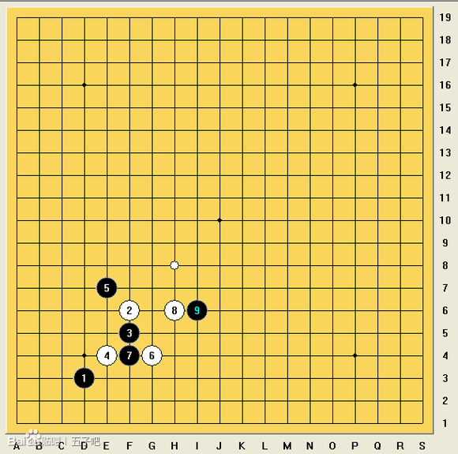
这样的话局面就与大圣十番棋中的第三局相同了，而这局面到后盘貌似是白大优，这也就意味着我必须变招，我是在9落下之后才发现这个问题的，这也是赛前准备不足的体现。在十番棋的第4局中9手选择了G6，这个后续黑的发展应该会好很多，如图：
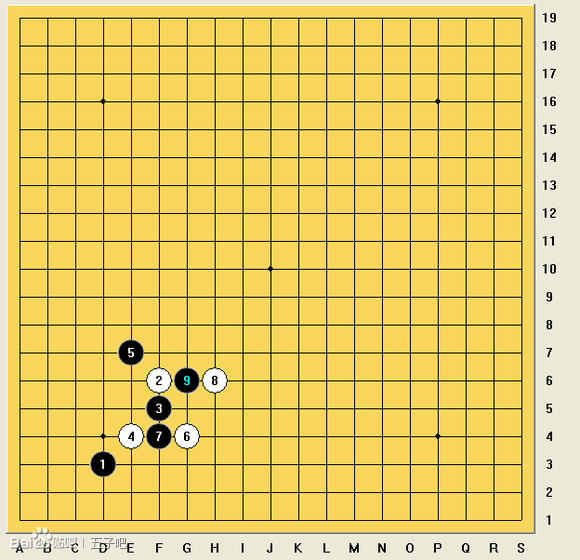
接下来双方都模仿此局至20，变招点主要在21或者25之后，经过一番思考我还是决定抢在局面定型之前变招，所以21选择了K5对白棋的空间进行压缩，22可能对手也没找到什么好点，于是选择了以不变应万变，继续模仿十番棋落在H5，23将白棋连接切断并且阻碍了白棋转移到左上的线路，个人感觉还是不错的，24也同样选择了压缩空间，把主动权交到了我的手里，25的选择至关重要。
#2 Re:黑白相交，棋意绵绵---黑白漫长的较量 作者：蓝天蓝 发表时间：2013-11-23 19:14:31
可以看出白棋左边有一点潜力但构不成威胁，14,20的活二也暂时用不上，黑右下也没实质性的威胁，经过一番思考25的选择主要停留在上图的4个黑点当中，首先排除掉的是L9，如果25落在这里，白可以选择这样的交换
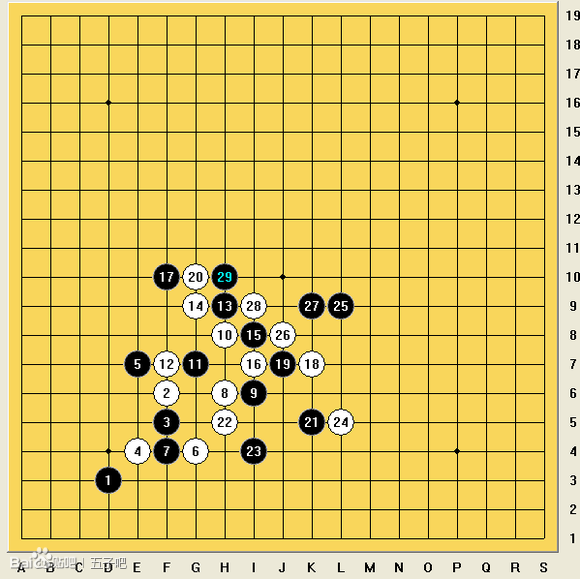
这样白右边的不确定性增加了而黑也没得到什么实质性的好处。其次25=K4这样过于直接的做棋也被排除：这样的交换:
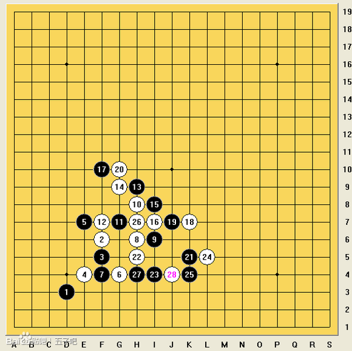
这样的话虽然解决了白竖线上这个眠三的干扰，但是黑下方的潜力被卖光，还得重新回上边控盘，个人感觉有点得不偿失。如果25选择L8：
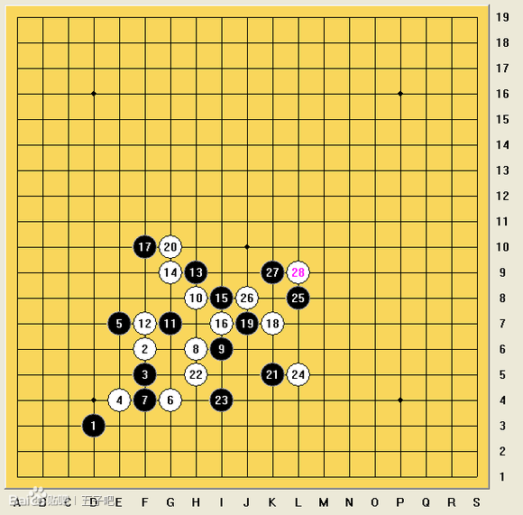
这个28所在的位置太关键，切断了黑棋的很多线路，而斜线上这个活二的存在又使得黑不敢放手进攻。所以思考再三，还是选择了实战25=K9的走法。
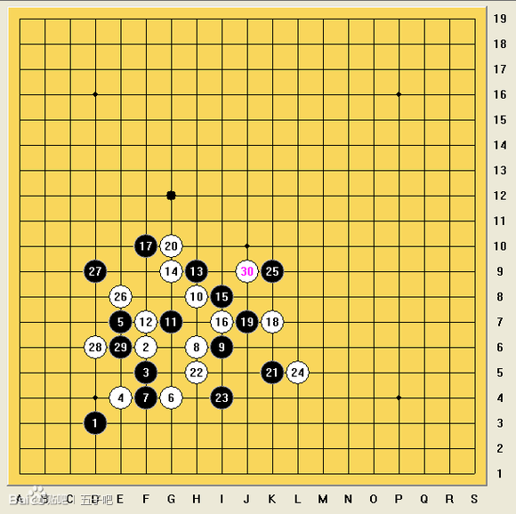
对手26-28先在左边进行了试探，之后30还是回来盖了J9顺便连接上14,20的活二，并与18，24形成八卦的形状，虽然简单但确实很有效果，黑右边纠缠不清，只得到上方寻找胜机，31盖G12希望能将左右的子力联系起来并且阻挡白的连续进攻，32如果在F11单防则黑有H12这样一子三通的好点：
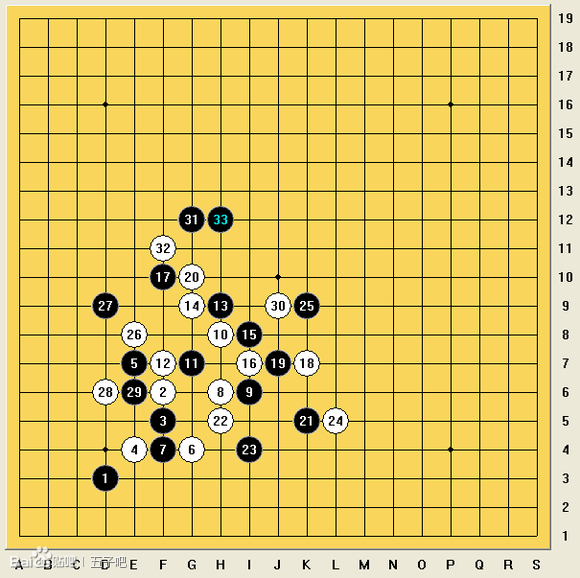
对手也是看到了这点所以32挡在F12，这样黑的空间被压缩得很难受，实战33仍旧落在H12当时是为了37这样后续的发展，从实际效果上来还是很有问题的，不如在I11或者J11多控制一下
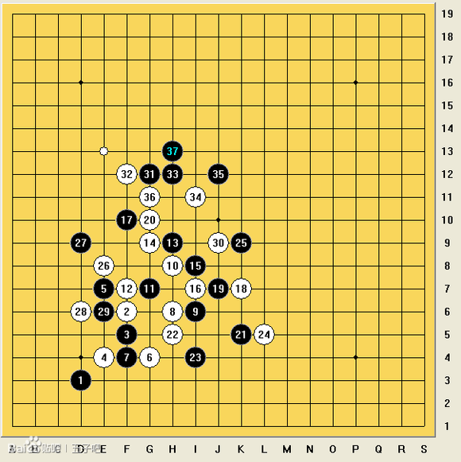
34,35正常，一看到这个36当时感觉就是对手防弱了，37是不是可以开始暴力进攻，算了一下发现白并没有什么好的应对手段，一度以为必胜了。但在37落下之后才发现还存在着38=E13的强防，而对手也精确地计算到了这个点，这样在一通正常的交换至56之后黑上方棋已经消耗殆尽，而白左上和右边同时出现威胁，这盘对黑来说已经很艰难了
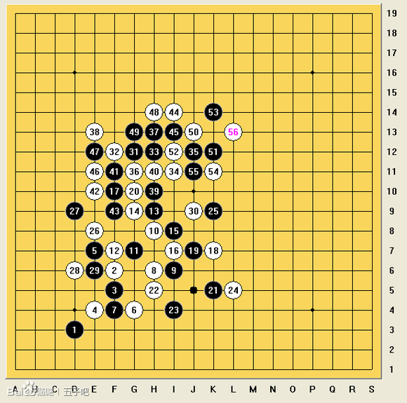
在软件的辅助下我算出左上白棋虽然看似很厚但黑恰好有几个唯一防，而右边空间巨大才是白真正有威胁的地方，于是57-61选择了先通过交换消磨掉白右边的优势,对手应该是不相信左上无 胜 ，62冲四强行抢先在左上进攻，从后续来看这个62应该已经必败了。
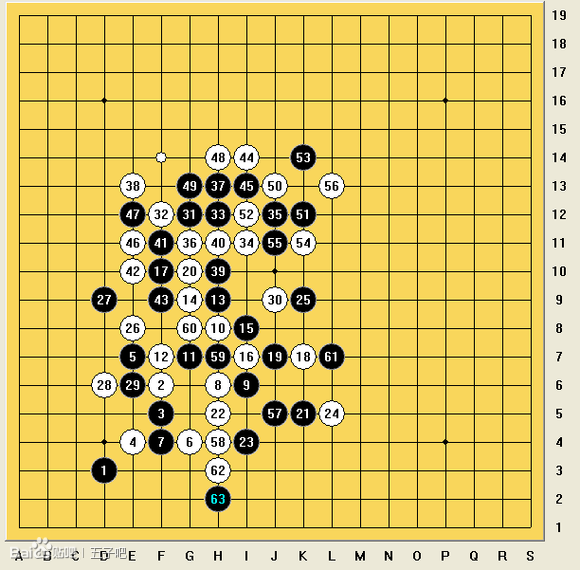
白开始疯狂地展开进攻，黑几乎每一步都是唯一，一点小失误就会全盘崩溃，至70一眼看过去仿佛必败之势已无法挽回，不过却有着71=D11这样精妙的唯一防！
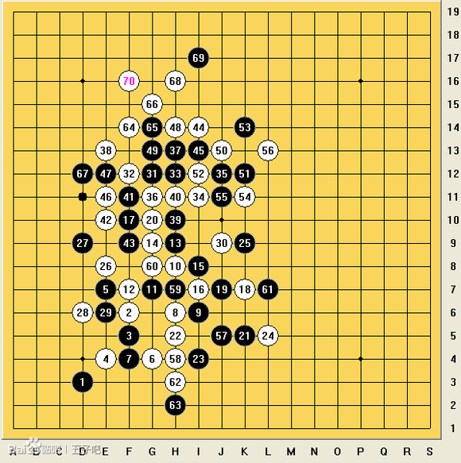
这个唯一防之后局面缓和了很多，白棋继续进攻至88已经基本宣告失败，这时右边的局面又要开始重新审视了。
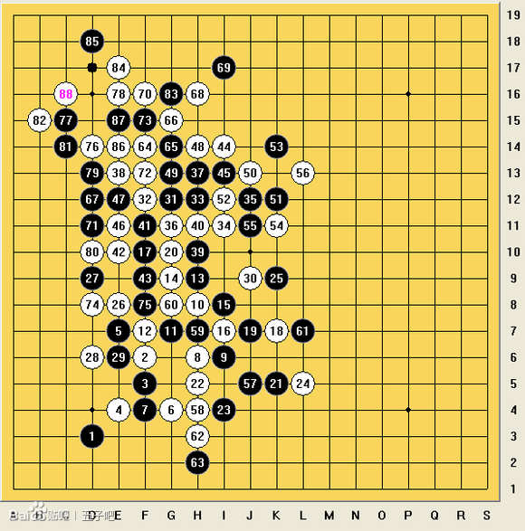
左边交换干净之后，白只得到右边防守，而此时在软件的辅助下不可思议地算出了黑棋必胜。
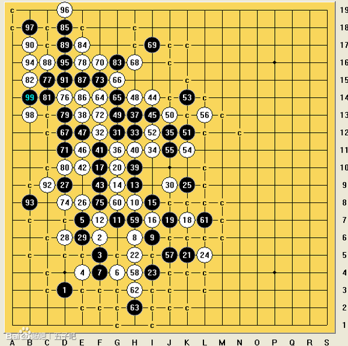
至105，黑右边已成胜势，白无法挽回
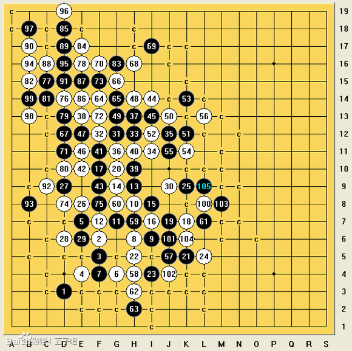
因为我的软件有些问题，在必胜的过程中选择了一条比较复杂的线路，所以120手之内无法取胜，而按照组委会的规定120手之内如果不接受提和的话就要在140手之内连5，否则判负，因为之前我的队伍已经2:1领先，所以这局如果接受提和的话最终结果仍然是我们队获胜，不过为了争取这盘的胜利，以及我算到的最长取胜线路在137手连5，在征询过队友的建议之后选择了不和，最终在137手形成绝
胜
，而对手没有一个冲四可以消耗步数，不得不说还是靠了一些运气，全谱如下：
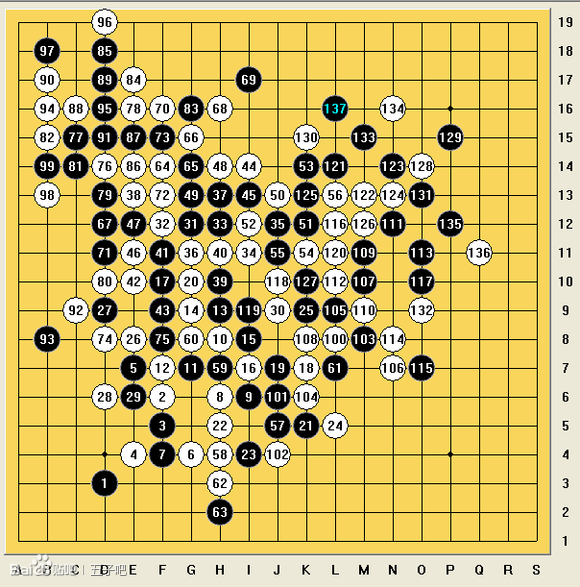
棋谱代码：
4h6e6f5g5d7g6g8e9e8c7d6d8b7b9c9d6abdad7abf8f9gcfbb5c4b4e5eab78688899a87987578a89695a6b969759588677a7b898b6b9a9c7af8g8d7ccd8h8i667675488493644967654c6c463554474a36257453425655344323453b2c244441222726ccaeagdcbecbeddabcd9dbe8caf9ecfdc8faaa9bc9c6d7e6e7b7d8baf6g5b5f7fbd5e4g8h9c4
总结：这盘前期黑21的变招白的应对不是很积极，导致黑棋取得一定优势，随后的几手黑控制的也不错，但是至33手不妥当地做棋以及37过于托大的进攻让38手瞬间扭转局面，不过46-56白看似合理的交换却给黑留下了可乘之机，随后62手对局面判断的失误更是败笔，让黑侥幸地获得了胜利。
［此帖子已被 蓝天蓝 在 2013-11-23 19:31:48 编辑过］